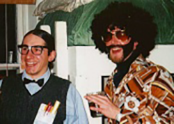

Carolyn (Donahue) Conant (Ph.D. 2002)
Postdoc at UC Berkeley; currently Associate Director of Product Development at Illumina (San Diego CA)
Michael Wichroski (Ph.D. 2003)
Postdoc at U Mass Medical Center (Worcester, MA); currently Director of Oncology Discovery Biology at Bristol-Myers Squibb (Wallingford CT)
Kim Carey (Ph.D. 2004)
Postdoc at Yale University (New Haven CT); currently Senior Research Scientist at the Broad Institute (Boston MA)
Stacey Gilk (Ph.D. 2004)
Postdoc at Rocky Mountain Labs (Hamilton MT); currently Associate Professor of Pathology and Microbiology, University Nebraska Medical Center (Omaha NE)
Jeff Mital (Ph.D. 2006)
Postdoc at Rocky Mountain Labs (Hamilton MT); currently Associate Professor of Biomedical Sciences at Quinnipiac University (Hamden CT)
Aoife Heaslip (Ph.D. 2008)
Postdocs at Indiana University (Bloomington IN) and University of Vermont; currently Assistant Professor of Molecular and Cell Biology at University of Connecticut (Storrs CT)
Jayanthi Garudathri (M.Sc. 2007)
Currently Research Scientist II, University of Washington (Seattle WA)
Whittney (Dotzler) Barkhuff (Ph.D. 2008, M.D. 2011)
Residency in pediatrics at Mass General; fellowship in neonatal-perinatal medicine at University Of New Mexico; currently Assistant Professor of Pediatrics, University of Vermont
Jeralyn Haraldsen (Postdoc, 2004-2008)
Director of Research Development, University of Vermont
Fabiola Parussini (Postdoc, 2006-2011)
Group Leader, National Scientific and Technical Research Council of Argentina
Jacqueline Leung (Ph.D. 2013)
Postdoc at Indiana University (Bloomington IN); currently Confocal Microscopy Specialist, NIH/NIAID Rocky Mountain Laboratories (Hamilton MT)
Anahi (Fernandez Cuppari) Odell (Ph.D. 2013)
Currently living in New Haven CT, raising two wonderful kids
Qing Tang (Ph.D. 2013)
Postdoc in Molecular Physiology and Biophysics, University of Vermont; currently postdoc at Brandeis University (Boston MA)
Luke Tilley (Ph.D. 2013)
Postdoc at the Whitehead Institute, MIT (Boston MA); currently Senior Project Manager, Dicerna Pharmaceuticals (Boston MA)
Shruthi Krishnamurthy (Ph.D. 2015)
Postdoc at University of California, Davis; currently Technology Transfer Specialist, Mass General Brigham (Boston MA)
Jenna Foderaro (Ph.D. 2017)
IRACDA NY-CAPS Postdoctoral Scholar at Stony Brook University (Stony Brook NY); currently TAC Engineer at Agilent Technologies (Winooski VT)
Pramod Rompikuntal (Postdoc, 2013-2017)
Currently Principal Scientist at GentiBio (Cambridge MA)
Rachel Stadler (PhD 2022)
Currently a Malaria Research Program Collaborative Postdoctoral Fellow at NIH (Bethesda MD)
